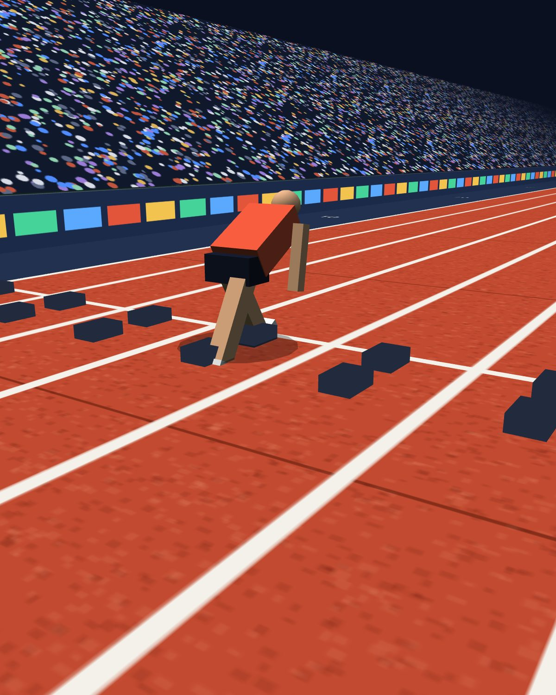
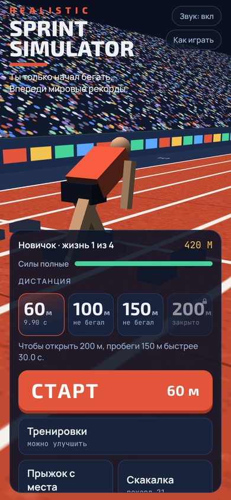
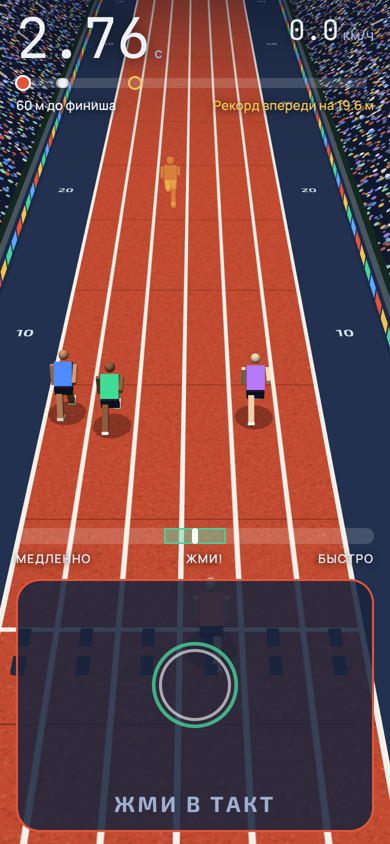
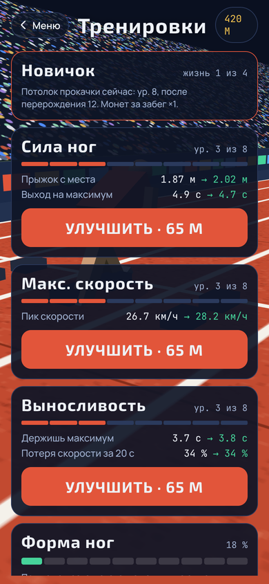
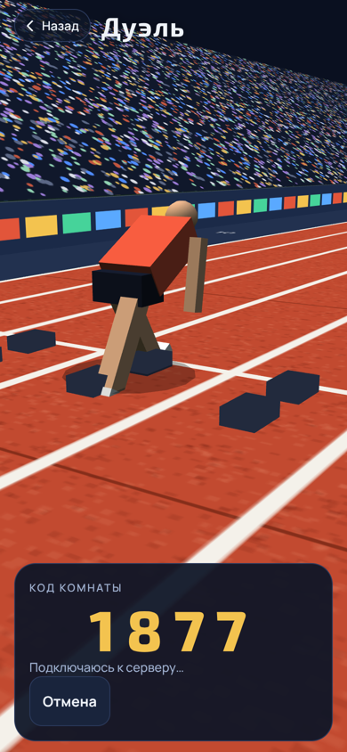

Силы
Каждая дистанция съедает запас сил, а выносливость делает его шире. Прыжки и скакалка тоже тратят. Пусто, значит, минуту отдыхаешь в реальном времени.

Android · бесплатно · рекорды настоящие
Жмёшь кнопку в такт, и бегун летит. Сбился с ритма, и он буксует. Выложился на максимум, и через минуту ноги не побегут вообще. Где-то в конце пути ждёт Болт с его 9,58.
Четыре дистанции, и на каждой висит время, которое кто-то правда пробежал. Первые секунды падают за вечер. Последние десятые придётся выгрызать через перерождения.
Тыкни на дистанцию, там у каждой своя история.
Рекорд поставлен в зале. Шестьдесят метров бегают зимой под крышей, а Коулман пробежал их со средней скоростью около 34 км/ч. В игре это самая короткая дистанция и первая, где можно почувствовать такт.
Болт бежал эту сотню примерно за 41 шаг. А в Пекине в 2008-м он начал праздновать за двадцать метров до финиша и всё равно выиграл. Берлинские 9,58 стоят уже много лет, и приблизиться к ним никто не смог.
Самая странная дистанция в таблице. Её бегают редко, а рекорд Болт поставил на прямой городской улице в Манчестере, на временной дорожке. В игре она нужна, чтобы потренировать выносливость между сотней и двести.
Через четыре дня после своей сотни в Берлине Болт пробежал двести. Рекорд тоже его. В игре на этой дистанции бегуну нужно больше всего сил, и если запас пуст, он упадёт прямо на дорожке.
Жизнь 1 → жизнь 2 → жизнь 3 → жизнь 4, и только тут рекорды мира реальны




Хотел игру, где важно не сколько раз тапнул, а как.
Внизу ползёт метка, на кнопке бьётся зелёное кольцо. Попал в такт, скорость растёт. Опередил или опоздал, и бегун буксует. Звучит просто, пока не попробуешь не сбиться на сотом метре.
Потом выяснилось, что бегать на пределе нельзя. Дотащился до конца двухсот метров еле живым, и минуту реального времени силы не вернутся. Выйдешь раньше, и бегун рухнет на полпути. Дыхание в игре записано живым человеком: синтезатор звучал как хлыст.
Дальше появились дуэли, потому что бежать одному скучно. Игра писалась вместе с нейросетью, так что вайбкодинг тут есть, и да, я в курсе. До реального бега ей далеко, но я тащу её ближе с каждой версией.
Пока собирал рекорды для игры, нарыл историй, которые не влезли в таблицу. Жми кнопку, они закончатся не скоро.
Пекин, 2008. Он уже вёл с большим отрывом, опустил руки и вовсе не бежал последние метры. Время всё равно получилось 9,69.
Выбери дистанцию и введи своё время. Посчитаю среднюю скорость и сравню с рекордом. Попробуй ввести 9,58.
Каждая дистанция съедает запас сил, а выносливость делает его шире. Прыжки и скакалка тоже тратят. Пусто, значит, минуту отдыхаешь в реальном времени.
Бежишь слишком медленно или вышел на старт с пустым баком, и бегун падает прямо на дорожке. Экран темнеет по краям, дрожит камера, слышно дыхание и сердце.
Монеты за забеги и прыжки уходят на три вещи. Сила ног даёт старт и прыжок, скорость поднимает потолок, выносливость держит максимум дольше.
Всё прокачал до потолка, переродился: потолок выше, монет за забег больше. Рекорды мира реально побить только на четвёртой жизни.
Дуэль живая: два телефона, одна дорожка, и вы видите соперника в реальном времени. Своего сервера у игры нет, связь идёт через публичные MQTT-брокеры.
Нужен интернет у обоих. Прогресс хранится на самом телефоне, регистрация не нужна.
— скачиваний с сайта
Готово! Откройте Sprint.apk в загрузках и разрешите установку, если телефон спросит.
Не получилось скачать здесь. Скачать напрямую